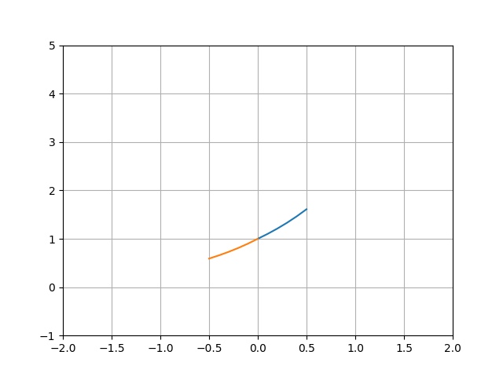
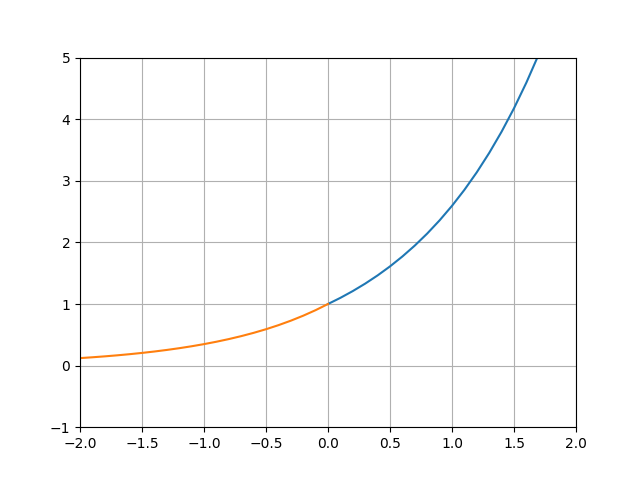

Devoir Math
Lien vers l'énoncé
Liens vers l'énoncé
1er code python
Lien vers le code python
2eme code python
Lien vers le code python
Courbes
Courbe de : images_et_graph_par_g(5,0.1)

Courbe de : images_et_graph_par_g(25,0.1)

Conclusion
On a donc bien les mêmes courbes que celles dans l'énoncé.
Infos supplémentaires :
cette fonction qui est sa propre dérivée est fonction exponentielle
Elle se note : f(x)=ex
Avec e une constante qui vaut environ 2.71828182846